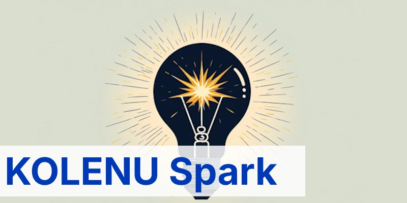

Novo
Spark
Programa de palestras para alunos e oficinas para professores sobre a história e cultura judaica e conscientização acerca do antissemitismo. Oferecemos gratuitamente materiais didáticos para alunos do Ensino Fundamental e Médio.